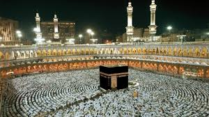
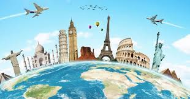

Tentangku.com
next 10 years.
Naik Haji.

keinginan saya 10 tahun kedepan yaitu saya ingin pergi naik haji ke
Makkah. yaitu tempat suci umat islam yang disebutkan dalam Al-Qur'an,
dan menjadi kiblat bagi seluruh umat islam. Saya ingin mengajak
insyaallah semua keluarga saya untuk beribadah haji ke Makkah.
Agar kami semua bisa lebih dekat dengan Allah.
Traveling.

Setelah mewujudkan impian 1o tahun pertama saya, saya akan mewujudkan
impian ke 2 yaitu pergi keliling dunia bersama teman teman dan
kluarga.
saya suka melakukan hal ini karena saya akan mengelilingi dunia dan ke
indahan dunia ini yang diciptakan oleh Allah SWT.